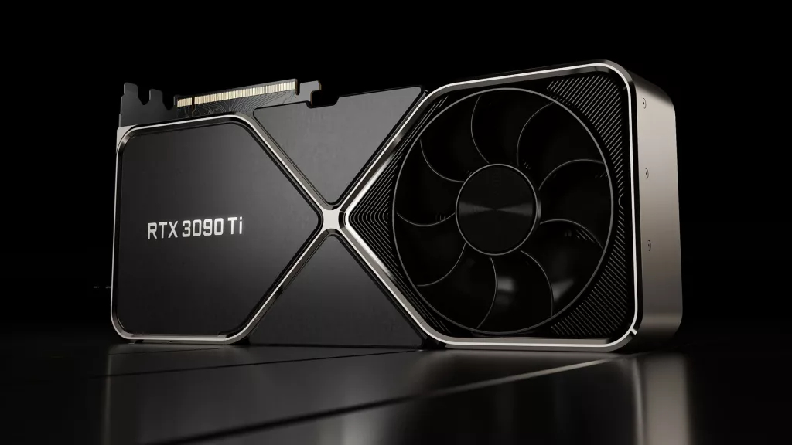

O unitate de procesare grafică (în engleză Graphics processing unit, GPU) este un circuit electronic specializat, conceput pentru a manevra și modifica rapid memoria pentru a accelera crearea de imagini într-un tampon de cadru destinat ieșirii pe un dispozitiv de afișare.
GPU-urile sunt utilizate în sisteme încorporate, telefoane mobile, computere personale, stații de lucru și console de jocuri. GPU-urile moderne sunt foarte eficiente la manipularea graficelor computerizate și a procesării imaginilor.
Structura lor foarte paralelă le face mai eficiente decât unitățile de procesare centrală cu scop general (CPU) pentru algoritmi care procesează blocuri mari de date în paralel. Într-un computer personal, un GPU poate fi prezent pe o placă video sau încorporat pe placa de bază. În anumite procesoare(CPU), acestea sunt încorporate pe matrița procesorului.
